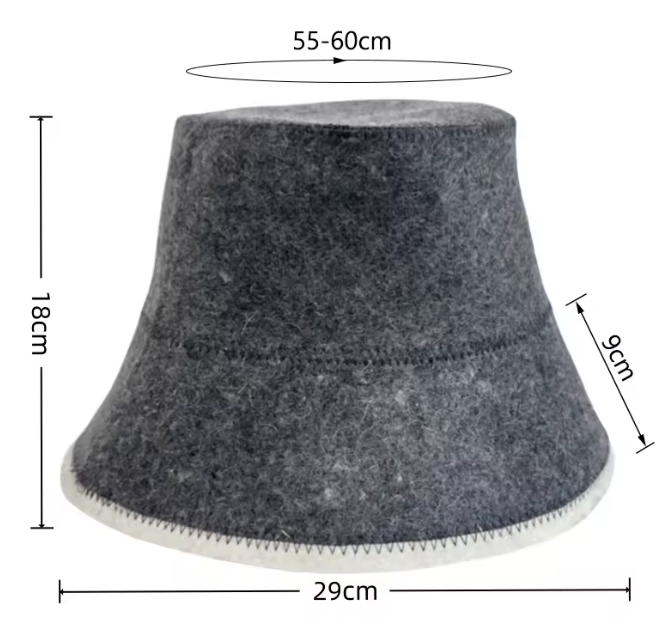
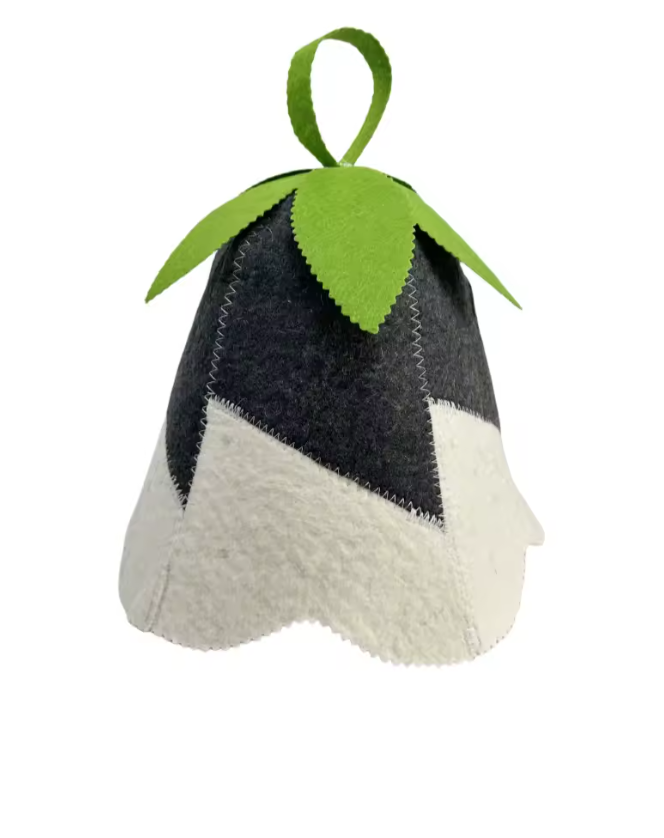
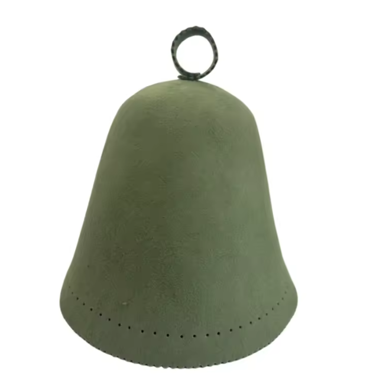

All sauna hats do the same job: keep your head from overheating and protect your hair from dry heat. But they're not all the same shape. Here's how our three styles compare.
The Bucket Sauna Hat

A wide-brim felt hat in grey, with a cream-coloured edge. It looks like a classic bucket hat and gives you a bit of shade over the forehead. It measures about 55-60 cm around the opening, based on the product diagram. Choose it if you like a looser, casual fit or want something you'd also wear to the beach.
The Belltop Sauna Hat

A bell-shaped felt hat with a loop on top and a decorative leaf or petal trim. The patchwork grey and cream pattern makes it feel more playful. It covers the ears and sits snugly on the head. Good for gifts, and for people who want their sauna hat to stand out.
The 100% Merino Sauna Hat

The traditional bell shape in solid 100% wool, in colours like moss green, blue, bright green, mustard and cream. It's a simple, classic hat that does exactly what a sauna hat should: covers the head and ears, insulates against heat and looks good in a group photo. Read more about why wool works so well.
Quick comparison
- Most traditional: 100% Merino bell hat.
- Most playful: Belltop.
- Most casual and shady: Bucket.
- Best for gifts: Belltop, or a set of Merino hats in different colours. See our sauna gift ideas.
- Best for teams and events: a Merino or white hat with an embroidered logo: see custom sauna hats.
Fit and comfort tips
- Pull it down over your ears, since that's where the benefit is.
- If you're between sizes, choose the looser option. A hat that's too tight gets uncomfortable in the heat.
- Wool can feel scratchy to very sensitive skin. A thin cotton headband under the hat helps.
Need help wearing yours? Our guide on how to wear a sauna hat covers fit, care and cleaning.
Ready to pick one?
Browse all styles and colours in the shop.
Questions
Which sauna hat is best for a first-timer?
A classic bell shaped wool hat is the traditional choice and covers your ears. If you prefer a looser fit and some shade, try the bucket style.
What size are sauna hats?
Most are one size fits most. The bucket hat measures roughly 55 to 60 cm around, per the product diagram. If you're between sizes or have a large head, contact us before ordering.
Are sauna hats unisex?
Yes. Sauna hats are designed to fit adults of all genders. Choose the style and colour you like best.
More from the journal: 12 Sauna Gift Ideas for the Sauna Lover in Your Life · Sauna Etiquette: 12 Unwritten Rules · What's the Best Material for a Sauna Hat? · How to Wear a Sauna Hat (and Look After It) · Winter Sauna Tips for Canadians: Staying Warm Between Rounds